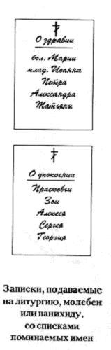

All notes for the living and for the departed are written in the genitive case. One should write not "Maria, John, Nicholas," but "of Maria, of John, of Nicholas." It is best to write the full name: not "Vanya, Sasha, Masha," but "John, Alexander, Maria." Notes should be written as legibly and neatly as possible, so that the priest can read them easily.
Better still if the note is made beautifully, with a deep sense of care; such a note the priest will read with great gladness, and he may even keep it so as to commemorate again and again those whose names are listed there, seeing what diligence you have put into your note and how much love you have for those who have fallen asleep or who are living now.
A panikhida is a short service devoted wholly and entirely to the commemoration of the departed alone. One must never write the living and the dead together on one note; these must be two separate notes. After all the names on the notes have been commemorated by the Church, the notes are usually burned in the church stove, and the ashes are buried in the earth.
The most significant commemoration is the one made at the Divine Liturgy, about which you may read in the chapter "Divine Services." At the proskomedia both the living and the departed are commemorated. This is the strongest and highest commemoration of all. These notes are written in exactly the same way as those for a moleben.
If a person is ill, one writes, for example, "of the ailing Tamara" or "of the ailing Marina"; if it is an infant, one should write "of the infant John," "of the infant Anastasia." Just as with the names of adults, the names of infants are written out in full. If you do not know a person's Orthodox name, write it as you yourself call him.
If the names of people whom you know for certain to be baptised are not Orthodox names, or if you do not know their Orthodox name, then it may be that the priest will not pronounce that name aloud, but will pray for that person inwardly in some such words as these: "Remember, O Lord, Thy servant, whose name Thou Thyself knowest." But in any case, if beside a non-Orthodox name you write in parentheses that this person is baptised, the priest will certainly commemorate him, and this will have the same power as if you knew the Orthodox name given him at Baptism.
Notes submitted for the proskomedia, for the Liturgy, may be of differing price, but this does not change the meaning of the commemoration or its quality; that always remains the same. You should never doubt that your note has been read and that the names written in it have been heard by the Lord. When you come to church and hand in a note for commemoration, you should always be certain that the Lord will hear your prayer.
Sometimes parishioners who are often in church submit not notes but so-called commemoration books. This is a little book with room to write down names, in the first half those for health and in the second those for repose. Such books are kept at the church, and the parishioners take them only when they need to enter the names of new people, or to move a name from the first half into the second when a relative or someone close to them has died.
Of course, when there is no time, one may leave a note and go. But it is better to be present at the Liturgy at which those close to you are commemorated, and also at the moleben and the panikhida. To the prayer of the Church your own prayer is added, and this is without doubt of benefit both to you and to those close to you.